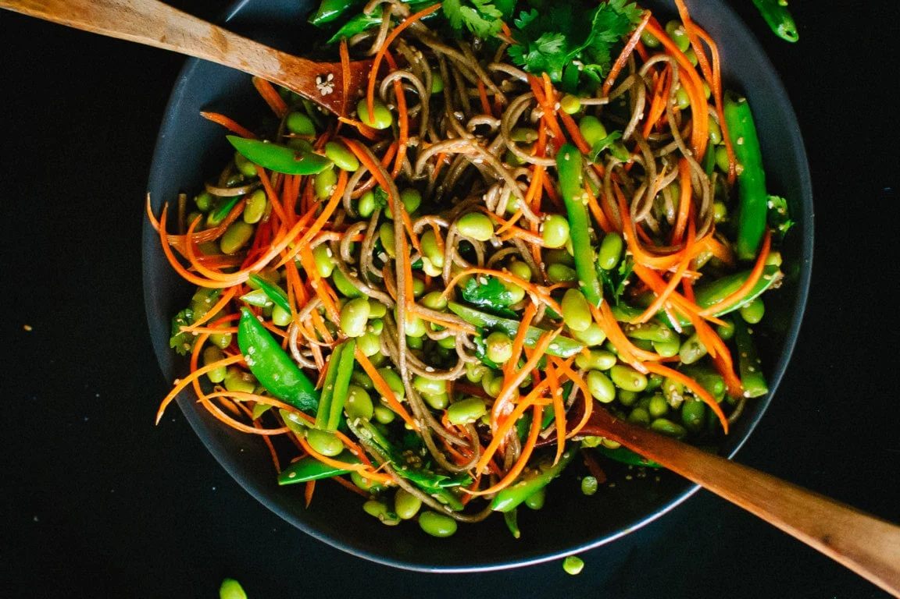

Carrot Soba Noodles
Ingredients:
- 6 ounces soba noodles or spaghetti noodles of choice
- 2 cups frozen organic edamame
- 10 ounces (about 3 cups) sugar snap peas or snow peas
- 6 medium-sized carrots, peeled
- ½ cup chopped fresh cilantro (about 2 handfuls)
- ¼ cup sesame seeds
Instructions:
- To prepare the vegetables: Use a chef’s knife to slice the peas
in half lengthwise (or just roughly chop them). Slice the carrots
into long, thin strips with a julienne peeler, or slice them into
ribbons with a vegetable peeler.
- To make the sauce: whisk together the ingredients in a small
bowl until emulsified. Set aside.
- Bring two big pots of water to a boil. In the meantime, toast the
sesame seeds: Pour the sesame seeds into a small pan. Toast for
about 4 to 5 minutes over medium-low heat, shaking the pan
frequently to prevent burning, until the seeds are turning golden
and starting to make popping noises.
- Once the pots of water are boiling: In one pot, cook the soba
noodles just until al dente, according to package directions
(probably about 5 minutes), then drain and briefly rinse under
cool water. Cook the frozen edamame in the other pot until warmed
through (about 4 to 6 minutes) but before draining, toss the halved
peas into the boiling edamame water and cook for an additional 20
seconds. Drain.
- Combine the soba noodles, edamame, snap peas and carrots in a
large serving bowl. Pour in the dressing and toss with salad
servers. Toss in the chopped cilantro and toasted sesame seeds.
Serve.
